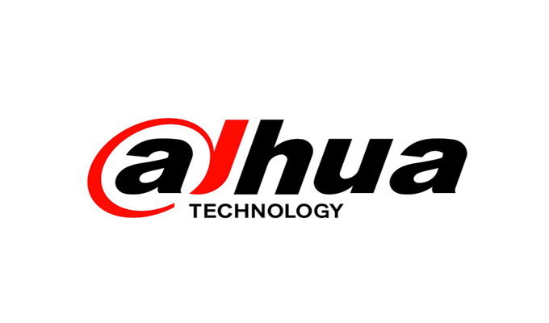
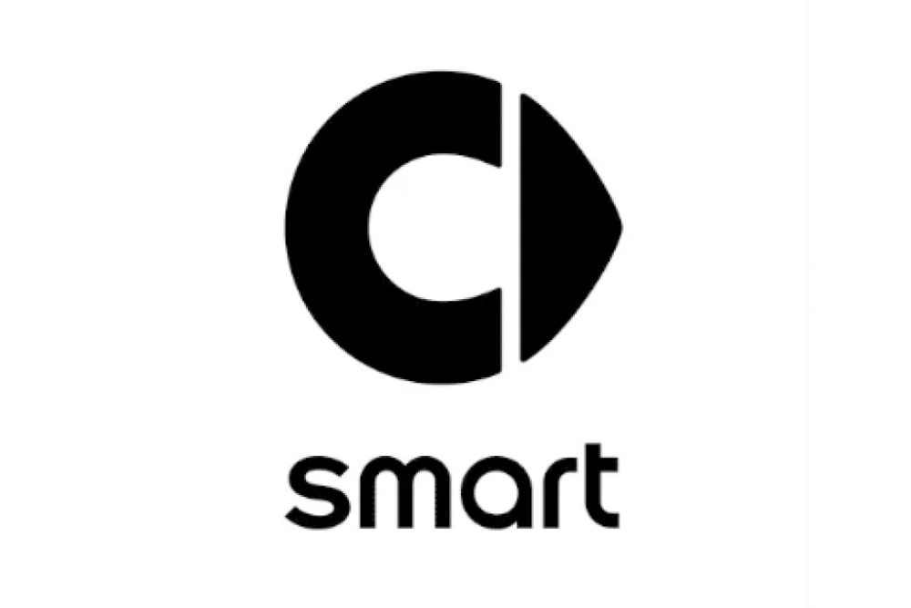
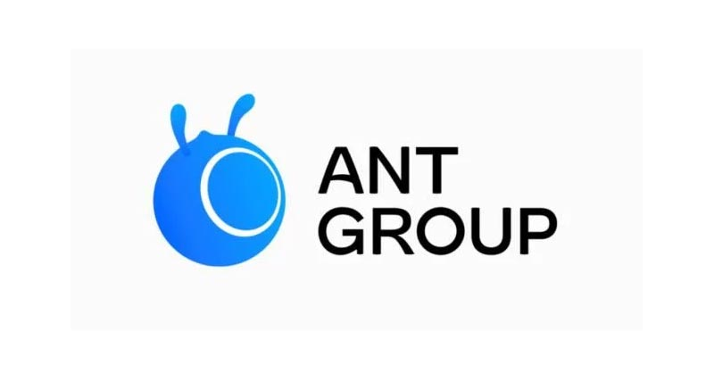
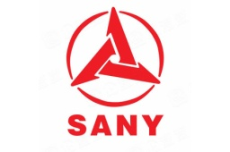

XiaoXiao Peng彭肖肖
Senior Algorithm Engineer 10x
Research In: Physical AI, Multimodal Perception Algorithms, LLM Data Algorithms (AI Data Engineer, Rubric, etc...)" data-zh="研究领域：物理AI、多模态感知算法、大模型数据算法（AI Data Engineer，Rubric，etc...）">Research In: Physical AI, Multimodal Perception Algorithms, LLM Data Algorithms (AI Data Engineer, Rubric, etc...)
Experience across Dahua Technology, smart (Mercedes-Benz), Ant Group and Sany Group, developing environment perception & multimodal perception algorithms.
M.S., Huaqiao University; B.S., Nanchang Hangkong University.
🏆 Achievements
Contests & Awards
IEEE BigData 2022 "Urban Digital Twins for Intelligent Road Inspection" (UDTIRI)
ECV2022 Passenger-Flow Counting Challenge (HP-sponsored Diamond Leaderboard Track)
iFLYTEK 1024 Developer Algorithm Competition · Citrus Pest & Disease Detection Track
TIANCHI IEEE UV 2022 "Vision Meets Algae" Object Detection Challenge
Intel AI Innovation Competition
2023 Wuxi International AI Algorithm Competition · Illegal Non-motorized Vehicle Parking Detection Track
2023 Yangtze River Delta (Wuhu) Algorithm Competition · Multi-channel Signboard Detection & Recognition from Vehicle-mounted Views Track
2022 Marine & Shipping Data Intelligence Innovation Competition · Typical Surface / Underwater Target Recognition
Huawei Cloud Cup Shenzhen Open Data Competition (Trash Sorting Recognition)
ECV2021 Algorithm Competition · High-visibility Vest Recognition Track
URPC National Underwater Robotics Competition (Acoustic / Optical Tracks)
Huawei Cup / Fujian Province Graduate Mathematical Modeling Competition
Blog posts published in "Autonomous Driving Focus" (自动驾驶之心), a leading autonomous-driving community media
Publications
HSGM: A Hierarchical Similarity Graph Module for Object Re-Identification
PON: Proposal Optimization Network for Temporal Action Proposal Generation
Periodic Action Temporal Localization Method Based on Two-Path Architecture for Product Counting in Sewing Video
Model Fusion Solution for IEEE UV 2022 "Vision Meets Algae" Object Detection
Patents
A total of 14 patents filed, with 7 granted, 6 under substantive examination and 1 published.
Covering video temporal action detection, license plate recognition, parking-space / wall-column detection, parking obstacle detection, lip-reading, axle recognition, video object detection and more.
Video-based temporal action detection method, apparatus, device and storage medium
License plate recognition method, apparatus, terminal and computer-readable storage medium
Detection method, detection apparatus and computer-readable storage medium
Lip-reading recognition method, apparatus and device
Vehicle detection method, apparatus and computer storage device
Video temporal action detection method, apparatus and device
Vehicle axle-type recognition method, apparatus, electronic device and storage medium
Parking-space detection algorithm and apparatus based on rotated object detection
Training method for a parking-space detection model
Training method and system for a vehicle parking model, electronic device and storage medium
Wall-column detection method for parking and corresponding detection system
Training method and training system for a parking wheel-blocker detection model
Obstacle detection method in parking scenarios, apparatus, device and vehicle
Medical Chinese typo recognition algorithm based on multi-model fusion
Work Experience

Dahua
Smart
Ant Group
Sany